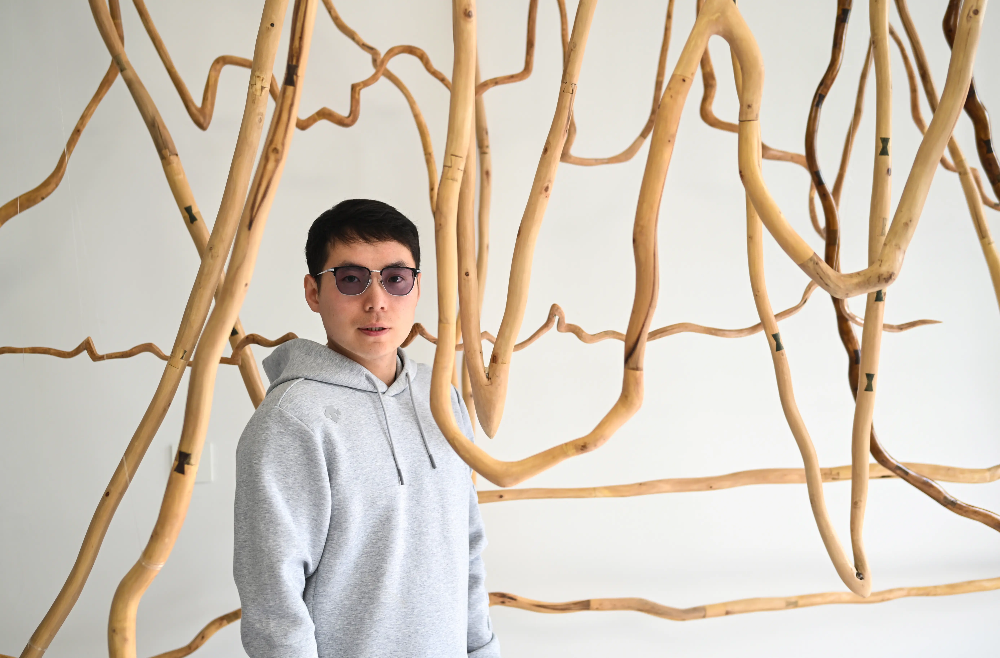

Zhang Jiarui's artistic creation revolves around two intertwined paths: "the contemporary transformation of traditional art" and "the on-site practice of ecological art." These two paths form a profound intertextuality in both creative logic and methodology.
The first trajectory focuses on reconfiguring traditional sculpture within a contemporary visual framework. Working primarily with natural materials such as wood and red clay, I draw on Chinese craftsmanship techniques, including mortise-and-tenon joinery. Rather than reproducing traditional forms or symbolic narratives, I distill elements such as structural balance and linear rhythm into a reduced, contemporary language. This approach is informed by Minimalism’s pursuit of pure form and by the emotional intensity of Mark Rothko’s work, allowing traditional aesthetics to evolve organically within present-day contexts.
The second trajectory extends beyond the studio into ecological and industrial sites. Through residencies in the Kubuqi Desert, the Xisha Islands, and abandoned steel industry zones, I explore desert, marine, and industrial ecologies. Using ice, coral restoration processes, and discarded machinery, my work investigates human intervention, minimal action, and the entanglement of production and nature. Together, these practices seek to rethink the relationships between humanity and nature, culture and ecology, positioning art as an active, site-responsive practice rather than a passive representation.